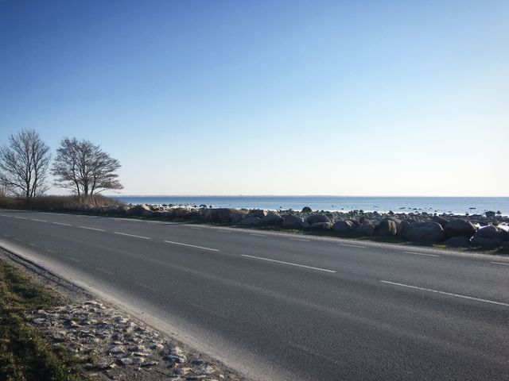
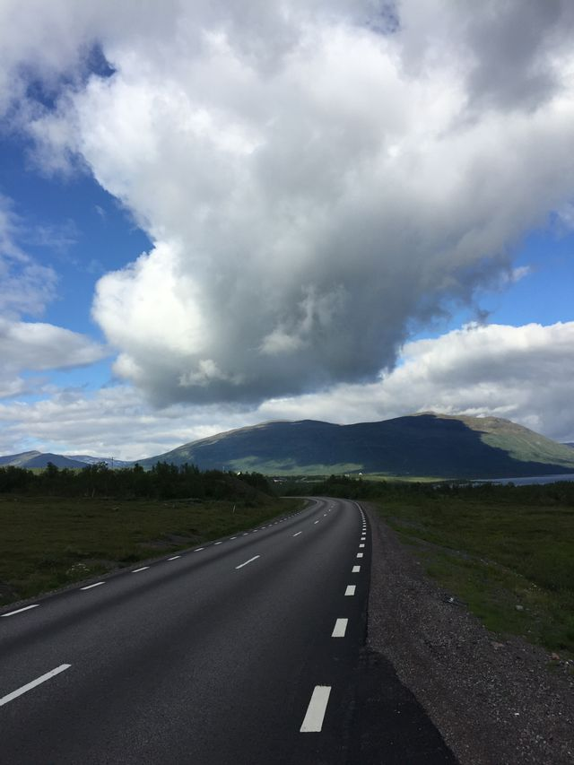

Mam na imię Karolina i na co dzień zajmuję się testowaniem oprogramowania.
Na urlopy nie mam za bardzo czasu, dlatego najczęściej podróżuję służbowo.
Każdy wyjazd traktuję jak okazję, żeby
po godzinach zobaczyć choć kawałek nowego miejsca.
Zanim gdzieś pojadę, sprawdzam okolicę na stronie
Mapy Google.
Kraje, które odwiedziłam
Żaden maszt telekomunikacyjny nie jest mi obcy, pozostałe atrakcje znam głównie zza kierownicy.
Austria - piękne krajobrazy, które mijałam z prędkością zgodną z przepisami.
Wiedeń - zwiedziłam wszystkie ronda i większość korków.
Hallstatt - widziałam jezioro, a dokładniej jego odbicie w lusterku wstecznym.
Estonia - poznałam każdą drogę i każdy maszt przy niej.
Hiszpania - słońce świeciło cały dzień, głównie przez przednią szybę.
Szwecja - zachwycające lasy, w których najciekawszą atrakcją był brak zasięgu.
Polska - tu znam już każdą dziurę w drodze i każdą dziurę w zasięgu.
Austria słynie z gór, jezior i zabytków. Ja poznałam ją głównie
przez przednią szybę, jadąc trasą testową od masztu do masztu.
Mimo to udało mi się zobaczyć kilka miejsc, które naprawdę robią wrażenie,
nawet jeśli tylko w przerwie na tankowanie.
Co warto zobaczyć?
Hallstatt i jezioro, najlepiej nie w lusterku wstecznym.
Wiedeńską Ringstraße, idealną do jazdy w kółko.
Alpejskie przełęcze, na których zasięg znika razem z asfaltem.
Estonia od masztu do masztu
Autorka: Karolina Trojanek,

Estonia to kraj lasów, jezior i równych dróg. Po kilku dniach testów sieci
LTE (Long Term Evolution)
potrafiłam rozpoznać okolicę po kształcie najbliższego masztu.
Kolega z zespołu przy każdym spadku sygnału powtarzał:
Spokojnie, zasięg będzie za następnym zakrętem.
Zwykle miał rację, tylko zakrętów było więcej, niż się spodziewaliśmy.
Tallinn zobaczyłam wieczorem, z parkingu przy hotelu,
ale stare miasto wyglądało nawet stamtąd bardzo ładnie.
Dzień czwarty. Przejechane 400 km, zaliczone 37 masztów,
zobaczony jeden łoś. Łoś nie miał zasięgu, ale wyglądał na zadowolonego.
Karolina Trojanek, Dziennik podróży służbowych
Szwecja bez zasięgu
Autorka: Karolina Trojanek,

W Szwecji drogi ciągną się przez lasy całymi kilometrami.
To idealne miejsce, żeby sprawdzić, jak telefon radzi sobie bez sygnału.
Wniosek z wyjazdu: szwedzkie lasy są piękne,
a cisza w nich bywa zupełna, również w eterze.
Galeria
Zdjęcia z podróży.
Plan mojej kolejnej podróży
Następny cel to Norwegia, tym razem jako pasażerka,
bez sprawdzania zasięgu co kilometr.
Wybrać termin, który nie koliduje ani z pracą, ani ze zjazdami na uczelni.